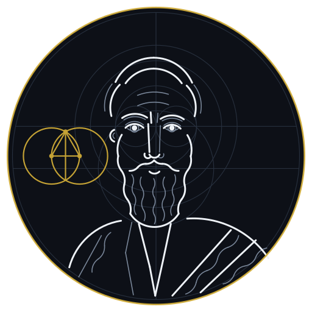

Euclid of Alexandria¶

The works of Euclid of Alexandria (fl. c. 300 BCE) established the axiomatic-deductive architecture and analytic foundations of mathematics for over two millennia through the Elements and the Data. Within the interconnected GEOMETOR semantic digital archive, these immortal treatises are liberated from static print bounds—decomposed into addressable semantic units, calibrated vector diagrams, primary-source folio provenance, and cross-corpus citations speaking one shared geometric language.
Elements
The thirteen books of plane geometry, proportion, number theory, incommensurable magnitudes, and the five regular polyhedra, translated from Heiberg’s Greek text with commentary by Sir Thomas Little Heath.
Data
Euclid’s foundational treatise of the Ancient Treasury of Analysis (Δεδομένα) establishing functional geometric determinacy across Definitions 1–15 and Propositions 1–94, prefaced by Marinus of Neapolis.
Usage
This archive is built with PHOTON Publish as an interconnected semantic book codex.
Bibliography
This unified bibliography brings together the authoritative Greek text editions, landmark translations, and manuscript traditions underpinning the GEOMETOR editions of Euclid’s Elements and Data.
changelog
geometor.euclid
About
GEOMETOR • euclid is the primary textual, archival, and visual source of truth for Euclid of Alexandria (c. 300 BCE) within the GEOMETOR Digital Scriptorium. Created and curated by phi ARCHITECT, the edition unites the monumental scholarship of Sir Thomas L. Heath’s definitive three-volume critical edition of The Thirteen Books of Euclid’s Elements (Cambridge University Press, 1908; 2nd ed. 1926) with a synchronized four-track bilingual Book Codex of Euclid’s Data (Δεδομένα), based on Heinrich Menge’s 1896 Teubner Greek critical text and Robert Simson’s historical edition. Spanning 1,416 archival folios and 831 calibrated geometric vector diagrams, this edition establishes an authoritative digital repository preserving the foundational canon of Western mathematics.
Connect
GEOMETOR is an open-source research and publishing initiative by phi ARCHITECT exploring constructive geometry, the divine proportion, and historical mathematical treatises.
Log
Chronological research and compilation log for geometor.euclid.
Modules
genindex
Codices & Edition Highlights
Digital reconstruction, semantic discovery, and critical Book Codices of Euclid’s *Elements* and *Data* (*Δεδομένα*).